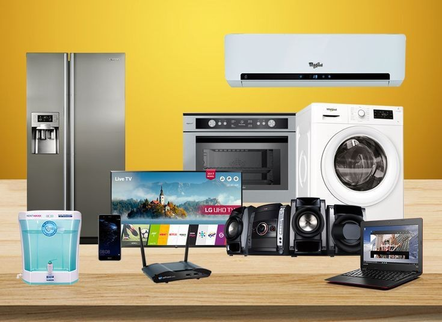

USER EXPERIENCE (UX) ANALYSIS FOR FLEXTRADE APP.
[EXCEL]
This project involved a comprehensive analysis of an online retail company's shopping app, which was experiencing challenges such as high bounce rates, cart abandonment, low average order value, and intense market competition.
Based on my findings, I provided actionable recommendations to optimize the app, aligning it with current trends. As a result of implementing these improvements, the company achieved a 10% reduction in the bounce rate.
TECHTRONIX INNOVATIONS ANALYSIS.
[POWER BI]
I conducted a performance analysis for a leading robotics company, focusing on their business activities over the past year. The project involved identifying peak sales periods, assessing the performance of individual products, and pinpointing underperforming areas.
Additionally, I identified potential markets for expansion and provided strategic insights on areas for improvement.
My recommendations, aimed at enhancing revenue and driving growth, proved to be invaluable to the company.

OPTIMIZING INVENTORY MANAGEMENT AT T.T. INC.
[SQL]
I conducted an analysis for a consumer electronics company, leveraging SQL to extract actionable insights critical for optimizing inventory and enhancing operational efficiency.
My findings provided key insights into promotional effectiveness, strategies to minimize understocking, and opportunities to drive sales volume across all product categories. These insights were pivotal in informing the company's inventory optimization strategy for the upcoming year.

DIGITALPATH INNOVATIONS A/B TEST ANALYSIS.
[TABLEAU]
This project was conducted for DigitalPath Innovations, a leader in digital marketing solutions, to enhance their website's user experience. Through an A/B test comparing two webpage versions, I analyzed user engagement metrics to determine the more effective design.
Utilizing a comprehensive dataset of user interactions and behaviors, I provided data-driven insights to inform future design iterations, aimed at improving engagement, conversion rates, and customer satisfaction.
CITY HOSPITAL'S FINANCIAL PERFPRMANCE ANALYSIS.
[POWER BI]
This was a Power BI analysis done for City Hospital to help optimize financial and operational decision-making. By compiling key data, I calculated total revenue, expenses, and profit, revealing a profit margin of 30.8%. The analysis also identified dermatology as the highest revenue-generating specialty.
Additionally, I provided insights into trends in revenue generation, patient visits, and the performance of doctors and procedures, enabling the hospital to make more informed and strategic decisions.
PERFORMANCE ANALYSIS FOR BEE & BEE SUPERMARKET.
[EXCEL]
I conducted an analysis for Bee & Bee Supermarket using Excel, to evaluate its financial performance over the last year and provide strategies for income improvement.
The analysis revealed key insights, such as April being the top revenue-generating month, Electronic Accessories leading in sales, and Liverpool generating the highest revenue.
Based on these findings, I recommended targeted promotions, membership incentives, geographic expansion, and optimized payment strategies to drive revenue growth and enhance customer engagement.